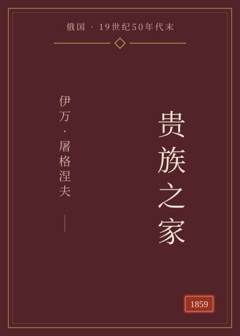
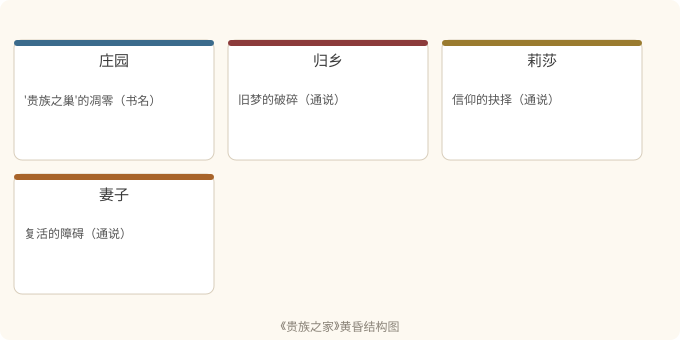

贵族之家
一、基本信息
| 作者 | 屠格涅夫 |
|---|---|
| 成书/出版 | 1859年（Britannica（B141）：1859《贵族之家》） Ivan Turgenev — Encyclopaedia Britannica（百科全书） |
| 国别/地区 | 俄国 |
| 时代 | 近代 · 19世纪50年代末 |
| 体裁 | 长篇小说 |
| 语言 | 俄语 |

《贵族之家》黄昏结构图（主题·结构图）
二、创作背景
B141：'1856《罗亭》1859《贵族之家》1860《前夜》1862《父与子》'。
Britannica（B141）：屠格涅夫——斯帕斯科耶庄园（作者页语境）。
题材（通说待核）：拉夫列茨基的归乡与莉莎的宗教决意。
三、内容脉络
（通说待核）'死而复生'的妻子归来与旧梦破碎。
（通说待核）莉莎入修道院与'贵族之巢'的凋零。
四、主要人物表
| 人物 | 身份 | 说明 |
|---|---|---|
| 拉夫列茨基 | 归乡贵族 | （通说待核） |
| 莉莎 | 少女 | （通说待核） |
五、主题与艺术特点
- 贵族庄园的黄昏（书名语境——通说待核）。
- 爱情与义务（通说待核）。
- 1850年代改革前夜（通说待核）。
六、影响与评论
- Britannica：1859《贵族之家》（B141）。
Ivan Turgenev — Encyclopaedia Britannica（百科全书） - Britannica：屠格涅夫庄园书写（B141 语境）。
Ivan Turgenev — Encyclopaedia Britannica（百科全书）
七、阅读建议
难点
- 改革前夜的社会史。
- 抒情与挽歌的语调。
- 《贵族之家》中译本（人民文学等——通说待核）。
- 俄文原版（公有领域）。
屠格涅夫抒情巅峰；与《罗亭》《前夜》对读。
八、待核实
- 拉夫列茨基/莉莎人名核对（通说）。
- 1859年发表（《现代人》说）待核。
- 瓦尔瓦拉·帕夫洛夫娜细节待核。